Plaza en la nube: publicar en Azure App Service
| Qué construyes | Plaza publicada en una dirección pública de internet, con su base de datos PostgreSQL también en la nube, creada paso a paso desde el portal de Azure |
| Prerrequisitos | Plaza funcionando en local con el catálogo en PostgreSQL, el proyecto subido a un repositorio de GitHub y una cuenta de Azure for Students activa con tu correo institucional |
| Herramientas | Un navegador, el portal de Azure (portal.azure.com), una cuenta de GitHub, .NET SDK 10, Git y PowerShell. No se usa Visual Studio: la publicación se hace desde GitHub |
- Las capturas son del portal de Azure en español. El portal cambia de aspecto con frecuencia: si un botón no está donde lo muestra la imagen, guíate por su nombre.
- En las capturas se taparon con gris o azul los datos personales: el correo, el identificador de la suscripción y otros códigos. En tu pantalla sí los verás.
- Cada etapa termina con una sección Comprueba. No sigas a la etapa siguiente hasta que se cumpla.
- Los recursos de Azure consumen el crédito de tu suscripción. La última etapa enseña a borrarlos todos de una vez.
Lo que vas a lograr
| Etapa | Qué haces |
|---|---|
| 1 | Entrar al portal de Azure y verificar que tu suscripción de estudiante está activa |
| 2 | Crear el grupo de recursos rg-plaza, el contenedor de todo lo que vas a crear |
| 3 | Crear el servidor PostgreSQL gratuito (B1ms) y abrir su firewall para tu equipo y para Azure |
| 4 | Crear la aplicación web (App Service) con el plan gratuito y resolver los errores de cuota y de región |
| 5 | Preparar Plaza en tu equipo y subirla a GitHub |
| 6 | Guardar la cadena de conexión en la aplicación web para que llegue a la base de datos |
| 7 | Aplicar la migración de Plaza para crear las tablas en la base de Azure |
| 8 | Enlazar la aplicación con tu repositorio de GitHub para publicar con cada push |
| 9 | Comprobar que Plaza está publicada y ver un cambio llegar a internet |
| 10 | Borrar todos los recursos de Azure al terminar, y qué hacer con el flujo de trabajo de GitHub |
Al final hay un apéndice para cambiar la contraseña del servidor y una tabla con los problemas más frecuentes y su solución.
Etapa 1. Entrar al portal y verificar la suscripción
Qué vas a lograr
Confirmar que tu cuenta de Azure for Students está activa y que eres el propietario de la suscripción. Sin esto no puedes crear recursos.
Entra al portal
- Abre portal.azure.com en el navegador.
- Inicia sesión con tu correo institucional. Azure for Students se activa con ese correo, no con uno personal.
- Llegarás a la página de Inicio. Si es tu primera vez, no tienes recursos: la sección Recursos aparece vacía.
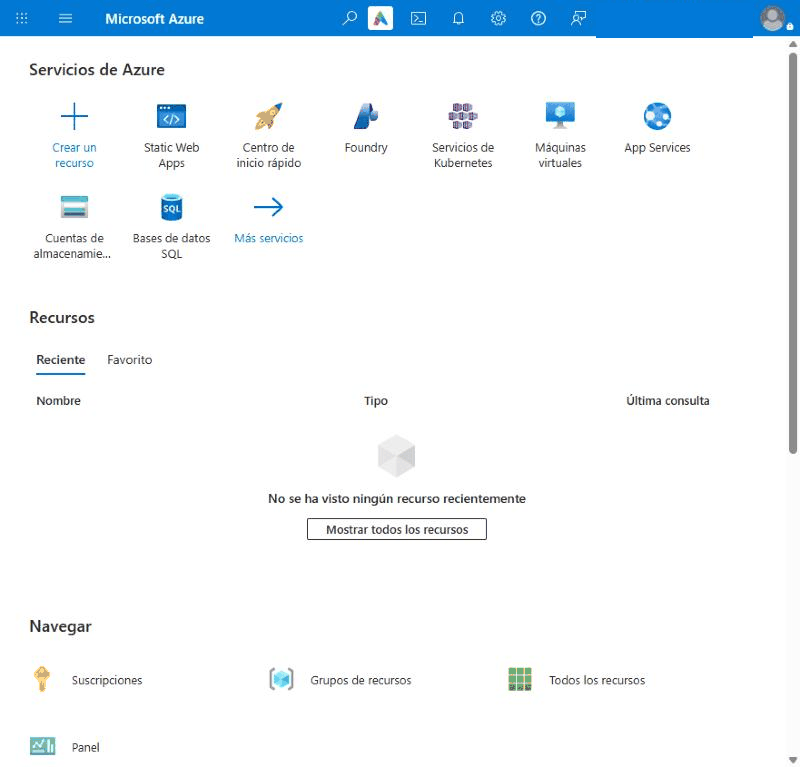
Verifica la suscripción
- En el bloque Navegar, al fondo de la página de inicio, haz clic en Suscripciones.
- Verás una lista con una sola suscripción llamada Azure for Students.
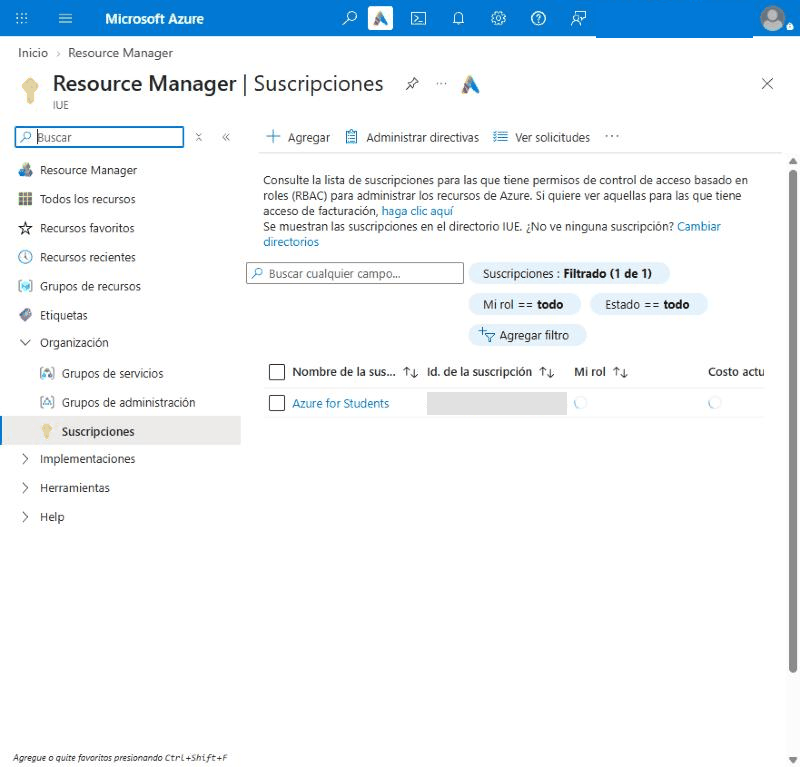
- Haz clic en el nombre Azure for Students para abrir su detalle.
- En Información esencial revisa tres datos: Estado debe decir Activo, Mi rol debe decir Propietario y Directorio debe ser el de la institución.
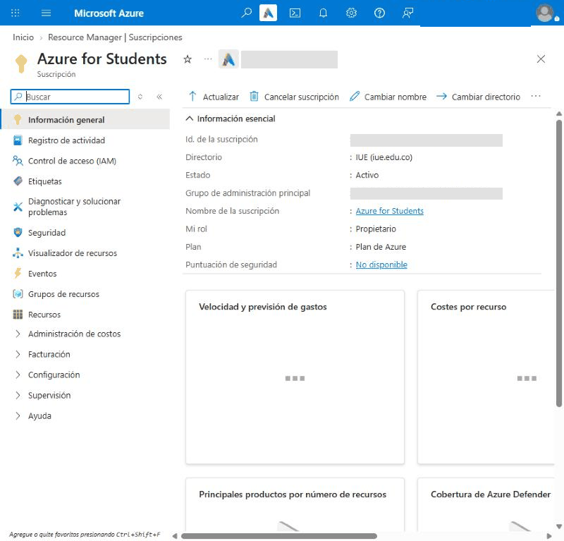
Comprueba
- El estado de la suscripción es Activo.
- Tu rol es Propietario.
- Los paneles de costes muestran 0.00: todavía no has creado nada.
Si el estado no es Activo o no ves ninguna suscripción, tu cuenta de estudiante aún no se activó. Revisa el correo de verificación de Azure for Students antes de continuar.
Etapa 2. Crear el grupo de recursos
Qué vas a lograr
Un grupo de recursos llamado rg-plaza.
Qué es un grupo de recursos
Es un contenedor lógico. Todo lo que crees para Plaza (la base de datos, la aplicación web) va dentro del mismo grupo. Esto sirve para algo muy práctico: al terminar la clase borras el grupo y desaparece todo lo que contiene, sin dejar recursos olvidados que sigan gastando tu crédito.
Los pasos
- En la página de Inicio, en el bloque Navegar, haz clic en Grupos de recursos.
- La lista está vacía. Haz clic en Crear.
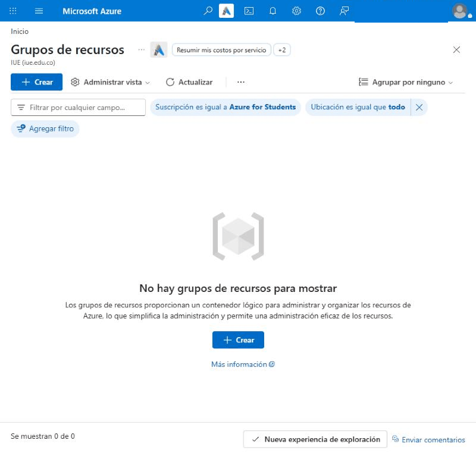
- Se abre el formulario Crear un grupo de recursos, en la pestaña Datos básicos. Tiene tres campos:
- Suscripción: ya viene con Azure for Students.
- Nombre del grupo de recursos: está vacío.
- Región: viene con (US) East US.
- Escribe
rg-plazaen Nombre del grupo de recursos. El prefijorg-es una convención: indica que el recurso es un resource group. - Deja la Región en (US) East US. Si abres la lista, verás todas las regiones disponibles.
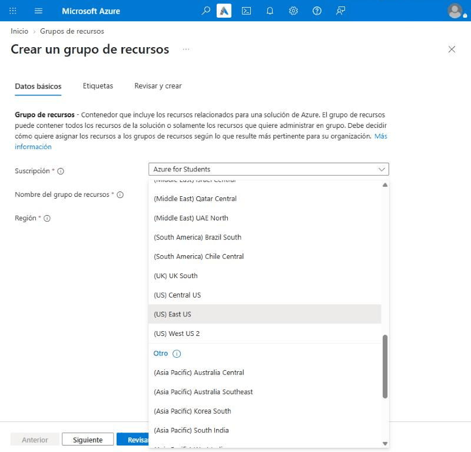
La región del grupo solo indica dónde se guardan los metadatos del propio grupo. Los recursos que pongas dentro pueden estar en otra región. Más adelante, al crear la base de datos y la aplicación, elegirás la región según lo que tu suscripción de estudiante permita.
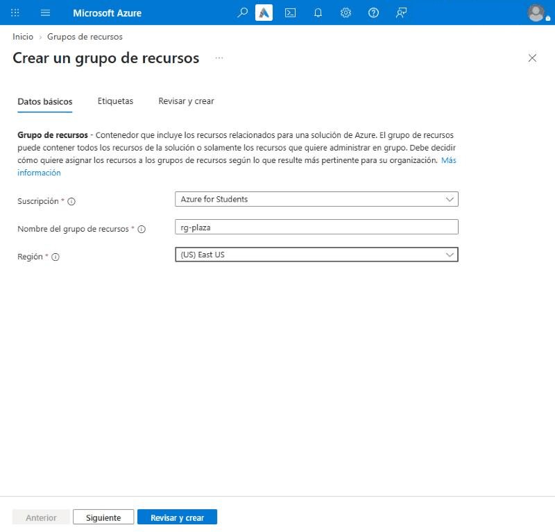
- Haz clic en Revisar y crear. Azure valida los datos y te muestra un resumen: suscripción, nombre, región y etiquetas (ninguna).
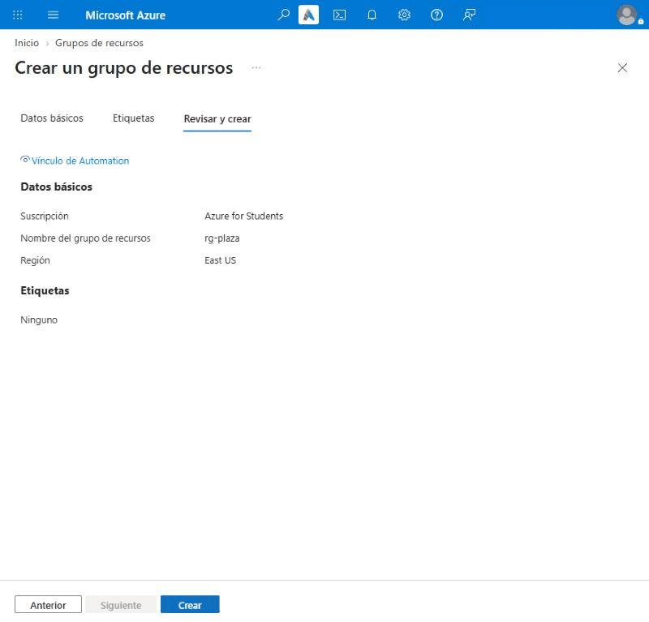
- Haz clic en Crear.
- Después de unos instantes, aparece una notificación verde: Grupo de recursos creado. La lista de grupos ya muestra
rg-plaza.
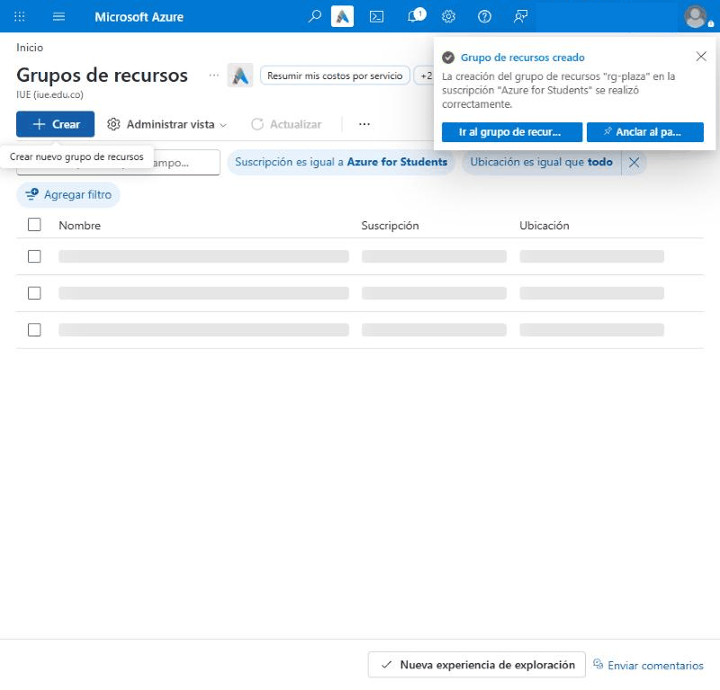
Comprueba
- Recibiste la notificación Grupo de recursos creado.
- En Grupos de recursos aparece
rg-plazacon la suscripción Azure for Students. - Sigues con costo 0.00: un grupo de recursos vacío no cuesta nada.
Etapa 3. Crear el servidor PostgreSQL
Qué vas a lograr
Un servidor Azure Database for PostgreSQL, servidor flexible, dentro de rg-plaza. Es la base de datos que usará Plaza cuando esté publicada.
Por qué hace falta
En tu equipo, Plaza se conecta a un PostgreSQL local (localhost). Cuando la aplicación viva en internet, ese localhost no existe: la aplicación necesita una base de datos que también esté en la nube. Azure la ofrece administrada: tú no instalas ni actualizas nada, solo la configuras.
Abre el formulario de creación
- En el buscador de la parte superior del portal escribe
PostgreSQLy elige Azure Database for PostgreSQL, servidores flexibles. - Haz clic en Crear. Se abre el formulario con cuatro pestañas: Básico, Redes, Seguridad y Etiquetas.
Pestaña Básico: proyecto y servidor
- Suscripción: Azure for Students, ya viene elegida.
- Grupo de recursos: abre la lista y elige
rg-plaza, el que creaste en la etapa anterior. - Nombre del servidor: debe ser único en todo Azure, porque pasa a formar parte de una dirección pública (
<nombre>.postgres.database.azure.com). Usaplaza-pg-seguido de algo propio, por ejemplo tus iniciales o tu grupo. Solo admite letras minúsculas, números y guiones. Cuando el nombre sirve, el formulario marca tres checks verdes.
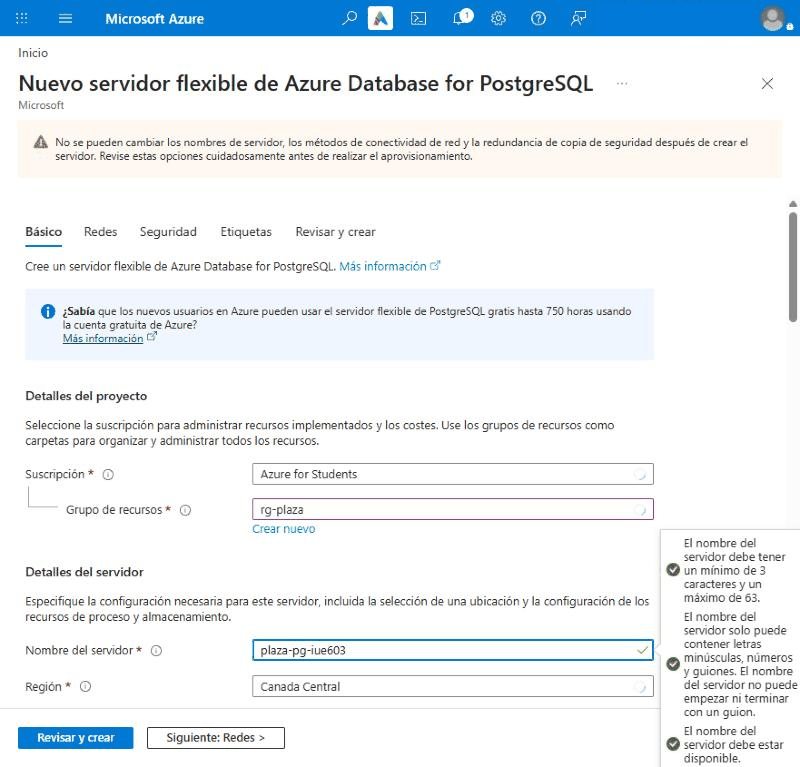
- Región: deja la que trae el formulario (Canada Central en la cuenta de este ejemplo). Las suscripciones de estudiante solo permiten algunas regiones y la que el formulario propone suele ser una de ellas. Si al crear Azure rechaza la región, elige otra de la lista.
- Versión de PostgreSQL: 18, la misma que usas en local.
El formulario propone Producción con un servidor de 4 núcleos (D4ads_v5). Ese tamaño consume tu crédito de estudiante en pocos días. Para Plaza elige Desarrollo/pruebas y el tamaño más pequeño, como se explica a continuación.
- En Tipo de carga de trabajo elige Desarrollo/pruebas. El formulario cambia el proceso a B2s, con dos núcleos. Todavía no es el nivel gratuito.
- En Proceso y almacenamiento haz clic en Configurar servidor. Se abre un panel lateral.
- Abre la lista Tamaño de proceso y elige Standard_B1ms (1 núcleo virtual, 2 GiB de memoria).
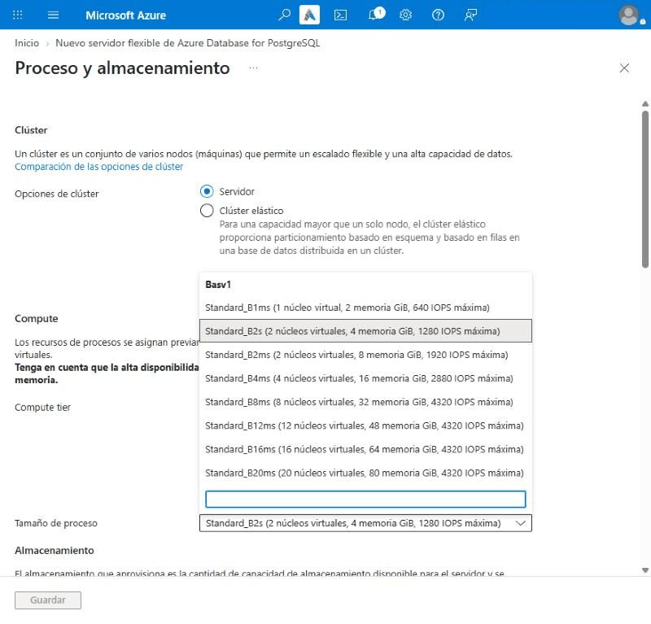
- Baja por el panel. El almacenamiento debe quedar en 32 GiB, con Crecimiento automático sin marcar, copia de seguridad de 7 días y Redundancia geográfica sin marcar.
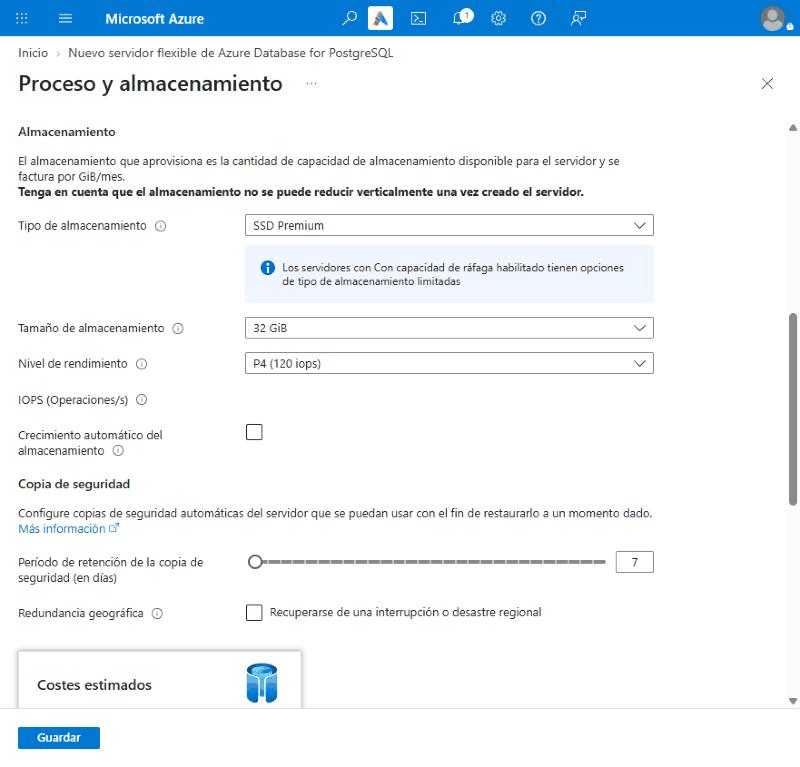
- Baja hasta el cuadro Costes estimados. Debe decir Liberar hasta 750 horas para Standard_B1ms y Liberar hasta 32 GB para el almacenamiento. Esa es la confirmación de que el servidor entra en la capa gratuita para estudiantes y cuentas nuevas.
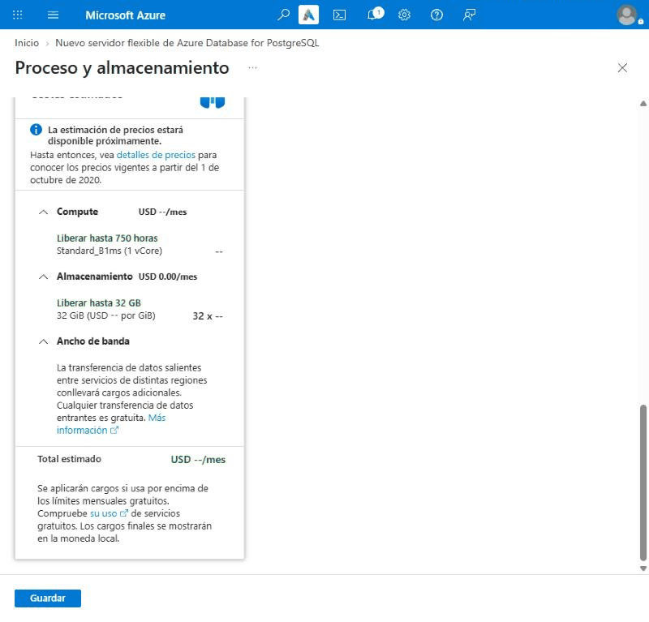
- Haz clic en Guardar. Regresas al formulario y Proceso y almacenamiento ahora dice B1ms, 1 núcleo, 2 GiB de RAM, 32 GiB.
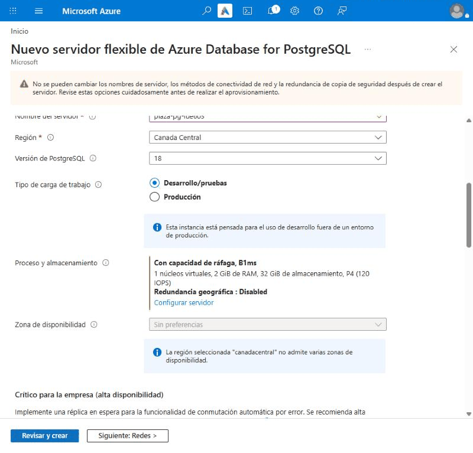
Pestaña Básico: autenticación
El formulario propone PostgreSQL y autenticación de Microsoft Entra, que obliga a designar un administrador de Entra. Para esta guía usamos solo usuario y contraseña.
- En Método de autenticación elige Autenticación de PostgreSQL.
- Inicio de sesión del administrador: escribe
plazaadmin. Es el usuario con el que se conectarádotnet efy la aplicación. - Contraseña y Confirmar contraseña: escribe la misma contraseña en los dos campos.
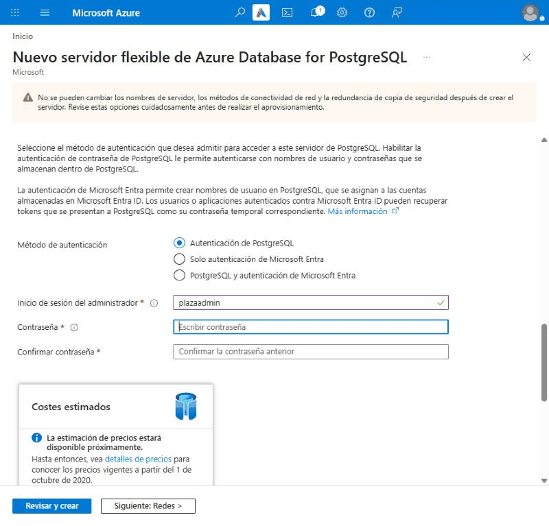
La contraseña debe tener entre 8 y 128 caracteres y combinar al menos tres de estas cuatro categorías: mayúsculas, minúsculas, números y símbolos. Si no cumple, el formulario lo marca en rojo y no te deja crear el servidor.
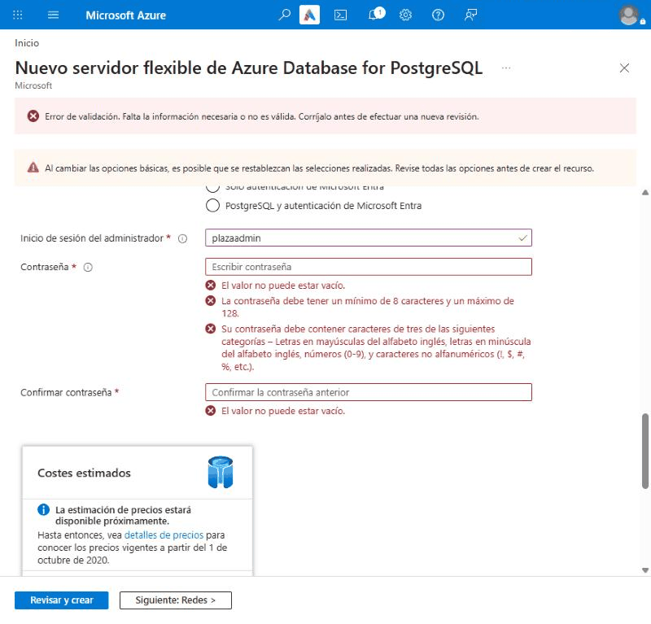
Azure no la vuelve a mostrar. La necesitarás en la cadena de conexión de la aplicación y para aplicar la migración desde tu equipo. En esta guía aparece como <tu-contraseña>: nunca la escribas en el repositorio ni en un archivo que subas a GitHub.
Pestaña Redes
- En Método de conectividad deja Acceso público (direcciones IP permitidas) y puntos de conexión privados, que es el valor por defecto. Mantén marcada la casilla de permitir el acceso público.
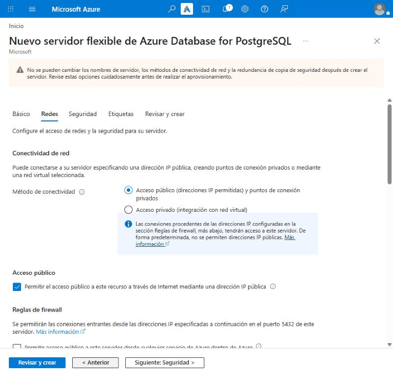
- Baja hasta Reglas de firewall. Por defecto nadie puede entrar al servidor: hay que abrir dos puertas.
- Marca Permitir acceso público a este servidor desde cualquier servicio de Azure dentro de Azure. Es la puerta por la que entrará tu aplicación publicada.
- Haz clic en Agregar dirección IP del cliente actual. Azure agrega una regla con la IP pública de tu equipo. Es la puerta por la que entrarás tú para aplicar la migración.
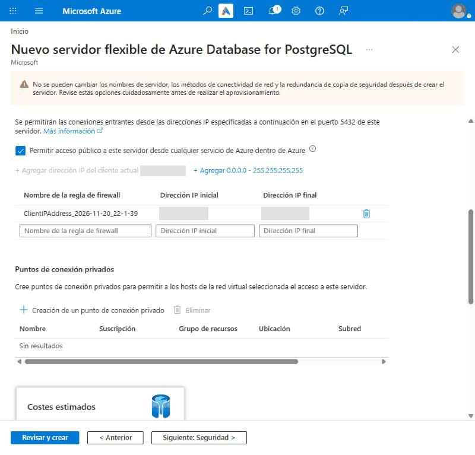
Al lado de Agregar dirección IP del cliente actual hay otro enlace, Agregar 0.0.0.0 - 255.255.255.255. No lo uses: abre la base de datos a todo internet.
Tu IP pública cambia si te conectas desde otra red, por ejemplo la de la universidad o la de tu casa. Si más adelante dotnet ef no logra conectar, vuelve a esta regla en el servidor y agrega la IP nueva.
Pestaña Seguridad
No cambies nada. La Clave de cifrado de datos queda como Clave administrada por el servicio.
Revisar y crear
- Haz clic en Revisar y crear. Azure valida todos los datos. Si algo falla, la pestaña con el problema aparece marcada en rojo.
- Revisa el resumen: grupo
rg-plaza, tu nombre de servidor, usuarioplazaadmin, versión 18, B1ms y almacenamiento de 32 GiB.
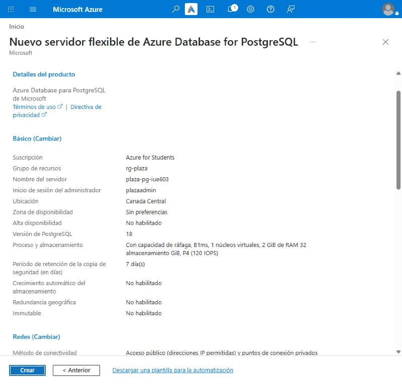
- Haz clic en Crear.
- El portal abre la página de la implementación con el mensaje La implementación está en curso. Espera: el servidor tarda en aprovisionarse. No cierres la pestaña.
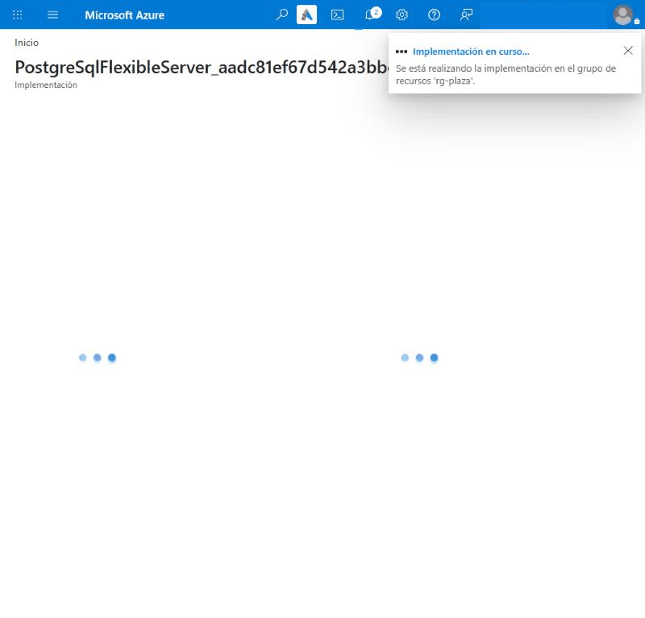
- La página no siempre se actualiza sola. Haz clic en Actualizar de vez en cuando. Cuando termine, el estado cambia a Se completó la implementación.
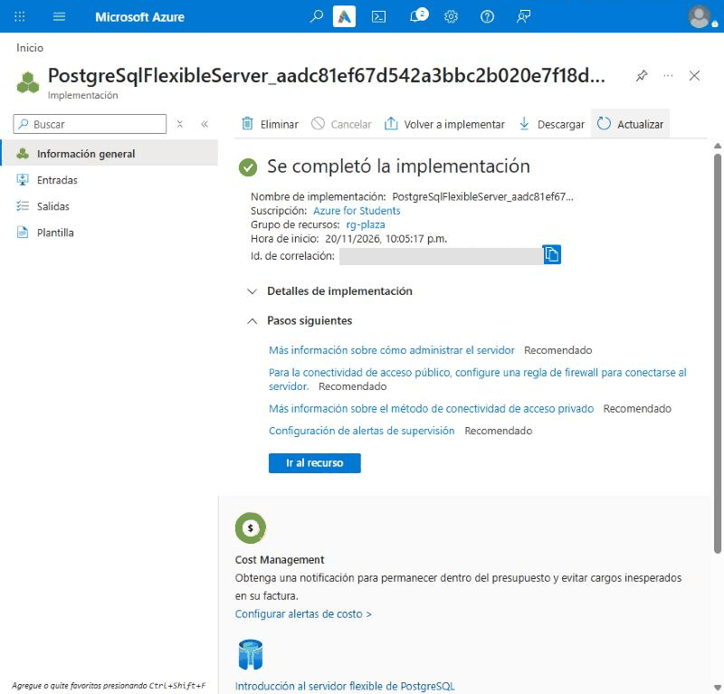
Revisa el servidor
- Haz clic en Ir al recurso. Se abre la página del servidor.
- En Información esencial comprueba que Estado dice Ready, que el servidor está en tu grupo
rg-plazay que el Inicio de sesión del administrador esplazaadmin. - Fíjate en el Punto de conexión: es la dirección
<tu-servidor>.postgres.database.azure.com. Es el valor que irá enHost=en la cadena de conexión de la etapa 6. Para copiarlo, pasa el cursor por encima y usa el icono de copiar.
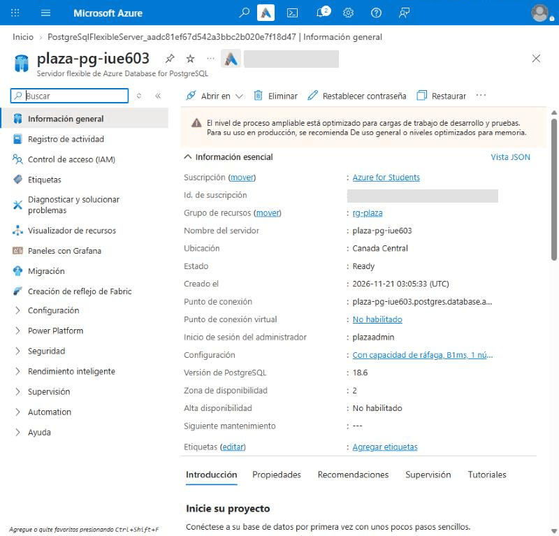
El aviso naranja de arriba dice que el nivel de proceso ampliable es para desarrollo y pruebas. Es correcto: Plaza es un proyecto de clase, no una aplicación con usuarios reales.
Crea la base de datos
El servidor ya existe, pero está vacío: solo trae bases de datos del sistema y una llamada postgres. Plaza necesita la suya.
- En el menú de la izquierda abre la sección Configuración y haz clic en Bases de datos.
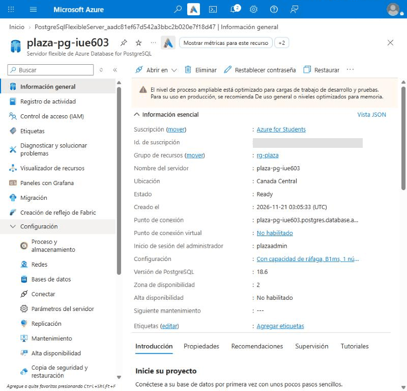
- La lista muestra tres bases:
azure_maintenanceyazure_sys, que son del sistema y no se pueden borrar, ypostgres.
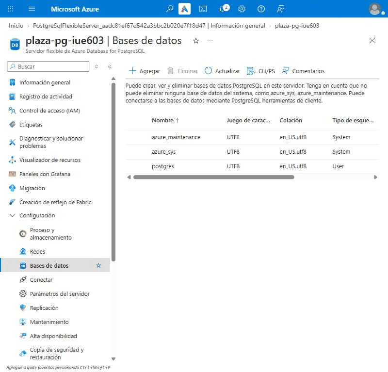
- Haz clic en Agregar. Se abre el panel Crear base de datos.
- En Nombre escribe
plaza_campesina. Es el mismo nombre que Plaza usa en tu equipo, enappsettings.Development.json, así que la cadena de conexión de la nube solo cambia el servidor y las credenciales. Deja el juego de caracteres y la colación como vienen (UTF8 y en_US.utf8).
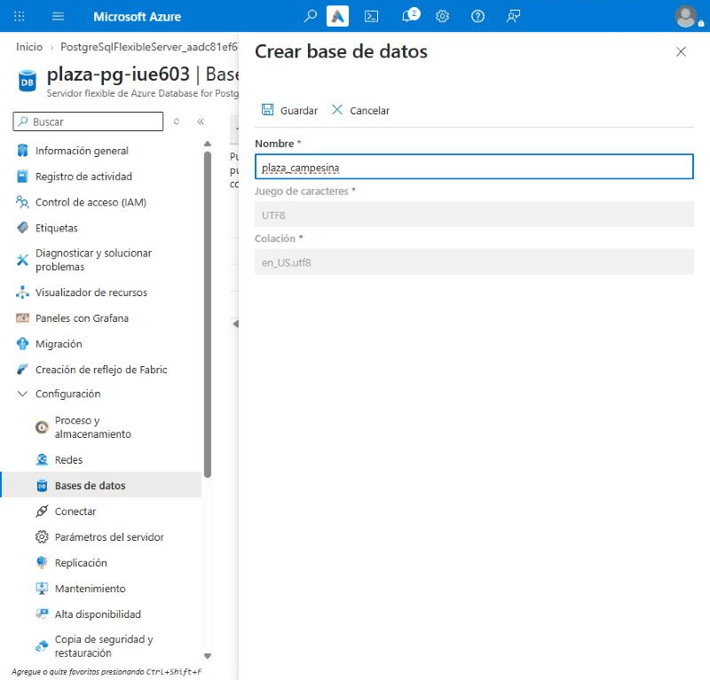
- Haz clic en Guardar. Aparece una notificación verde: Se creó correctamente PostgreSQL base de datos.
- Si la lista no cambia, haz clic en Actualizar. Ahora aparece
plaza_campesinacon tipo User.
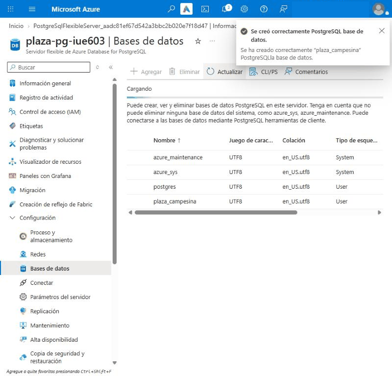
Comprueba
- El servidor está en estado Ready.
- La lista de bases de datos incluye
plaza_campesina. - Tienes anotados: el punto de conexión del servidor, el usuario
plazaadminy tu contraseña. - El grupo
rg-plazaya contiene un recurso. Si abres el grupo, lo verás en la lista.
Con esto la base de datos está lista, pero todavía está vacía: no tiene las tablas de Plaza. Esas se crean en la etapa de migraciones.
Etapa 4. Crear la aplicación web
Qué vas a lograr
Una aplicación web de App Service dentro de rg-plaza, con el runtime de .NET 10 y el plan gratuito. Al terminar tendrá una dirección pública que responde con la página de bienvenida de Azure. Todavía no contiene Plaza: eso llega en las etapas siguientes.
Qué es App Service
App Service es el servicio de Azure que ejecuta tu aplicación web: recibe las peticiones de internet, arranca tu programa ASP.NET Core y devuelve las respuestas. Tú no administras el servidor ni el sistema operativo. Cada aplicación web vive dentro de un plan de App Service, que es el que define cuánta máquina te toca y cuánto cuesta.
Abre el formulario de creación
- En la página de Inicio del portal haz clic en Crear un recurso y busca Aplicación web (en inglés, Web App). También sirve escribir
App Servicesen el buscador superior y pulsar Crear. - Se abre el formulario Crear aplicación web, con siete pestañas: Datos básicos, Base de datos, Implementación, Redes, Supervisión y protección, Etiquetas y Revisar y crear.
Pestaña Datos básicos
- Suscripción: Azure for Students.
- Grupo de recursos: abre la lista y elige
rg-plaza. - Nombre: es único en todo Azure y forma tu dirección pública. Usa
plaza-seguido de algo propio, por ejemploplaza-iue603. Solo admite letras, números y guiones.
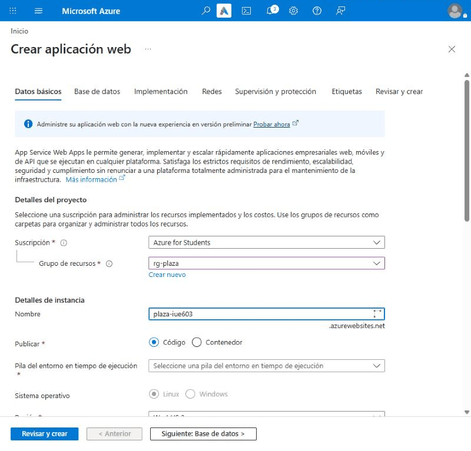
- Publicar: deja Código. La otra opción, Contenedor, es para aplicaciones empaquetadas con Docker.
- Pila del entorno en tiempo de ejecución: abre la lista y elige .NET 10 (LTS), la misma versión con la que construiste Plaza. Si eliges otra, la aplicación no arranca.
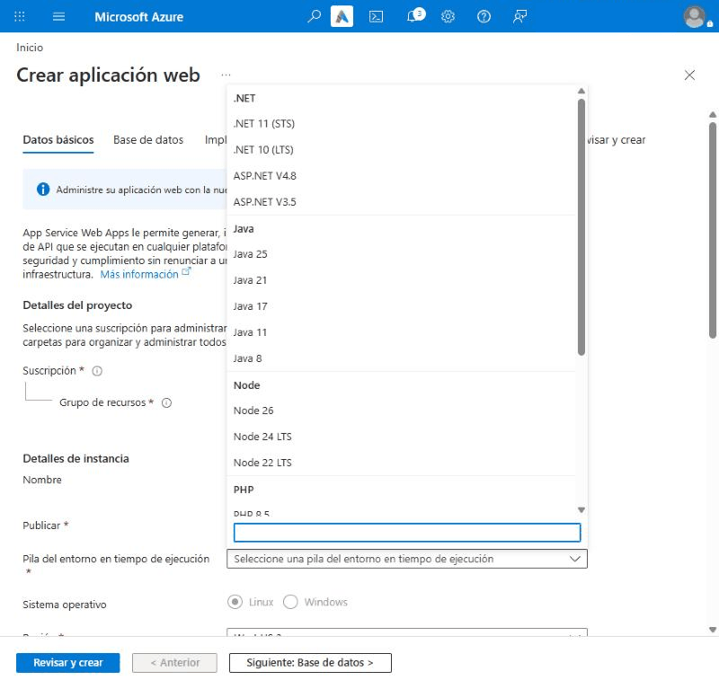
- Sistema operativo: Linux, que es lo que propone el formulario.
Región y plan: los valores por defecto cuestan dinero
Baja por el formulario hasta Planes de precios. Aquí hay dos cosas que revisar.
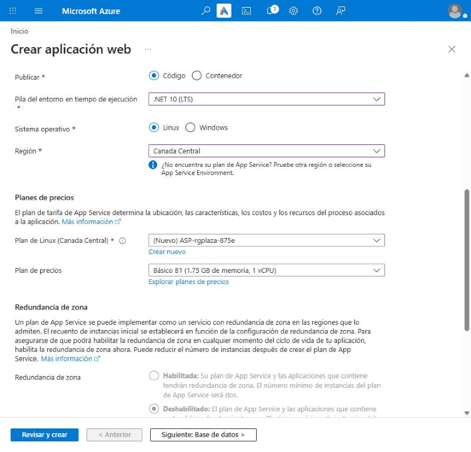
El plan que propone el formulario es Básico B1, que cuesta alrededor de 13 a 15 USD al mes y sale de tu crédito. Para esta guía elige el plan gratuito:
- Abre la lista Plan de precios.
- Elige Gratis F1 (1 GB de memoria). En la lista dice 0.00 USD/mes.
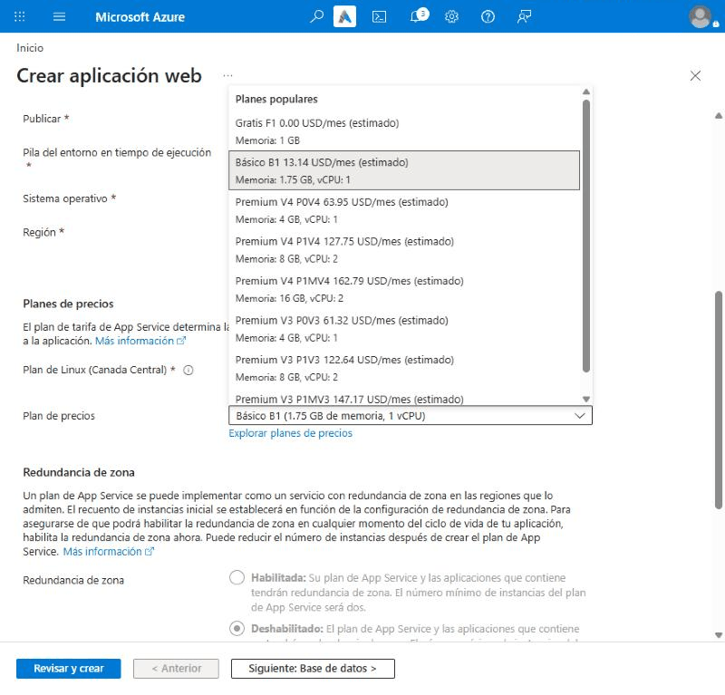
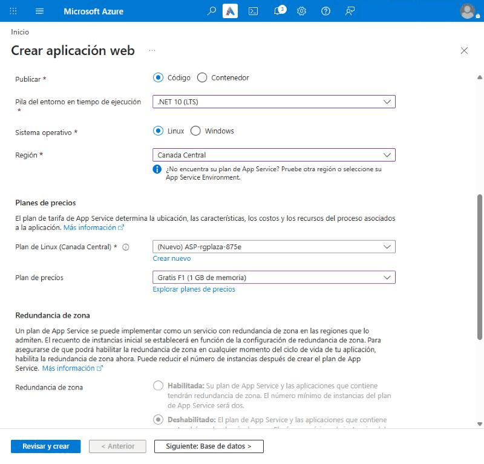
F1 es suficiente para una aplicación de clase, pero tiene límites: comparte la máquina con otras aplicaciones, tiene una cuota diaria de tiempo de CPU, no tiene Always On (la aplicación se duerme si nadie la visita y la primera petición después de un rato tarda más) y no tiene garantía de disponibilidad. Para la demo de la clase es lo correcto.
Las pestañas Base de datos, Implementación, Redes y Supervisión
Las cuatro se quedan como vienen. Hay un detalle que explicar en cada una.
- Base de datos: no marques Crear una base de datos. Ya creaste la tuya en la etapa 3, y esta opción solo está disponible en planes de pago.
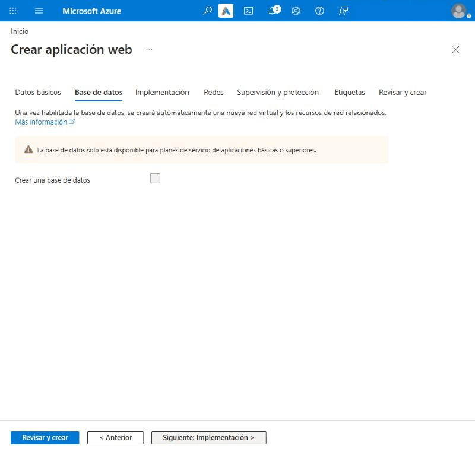
- Implementación: aquí aparece la implementación continua con GitHub, deshabilitada. El portal avisa que con Linux y este plan no se puede configurar durante la creación. Se hace después, desde el Deployment Center de la aplicación ya creada, en una etapa posterior.
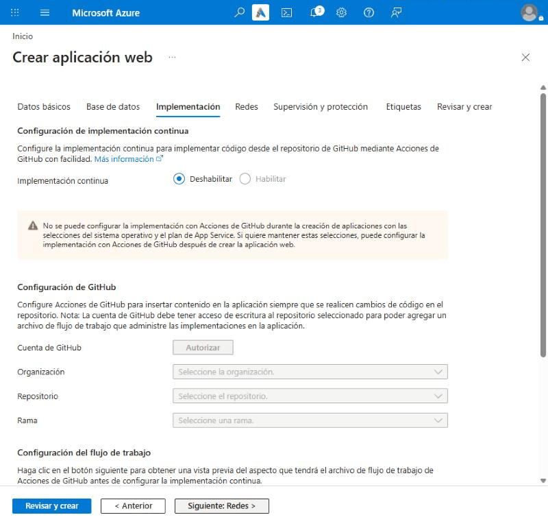
- Redes: deja el acceso público activado. Sin él nadie podría abrir tu aplicación desde internet.
- Supervisión y protección: deja Application Insights en No y Defender sin marcar. El propio formulario avisa que ambos se facturan por separado.
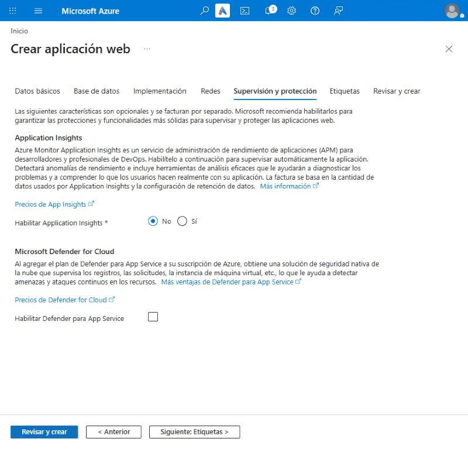
Revisar y crear
- Haz clic en Revisar y crear. El resumen debe mostrar: SKU Gratis, tu grupo
rg-plaza, tu nombre, la pila .NET 10 (LTS), sistema operativo Linux y Application Insights: Sin habilitar.
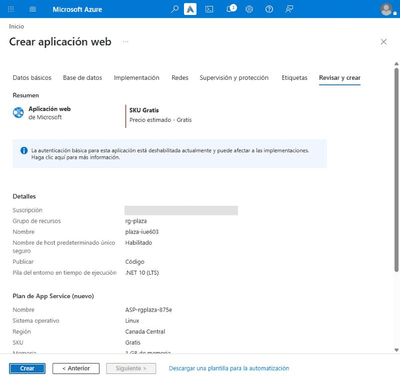
- En el resumen aparece un aviso: la autenticación básica está deshabilitada. Es lo normal en Azure hoy. Significa que no puedes publicar con un usuario y una contraseña de despliegue. No te afecta: en esta guía la publicación se hace desde GitHub, y de esa conexión se encarga el Deployment Center de la aplicación en una etapa posterior.
- Haz clic en Crear.
Si Azure rechaza la creación: cuota y regiones
Aquí es donde más estudiantes se atascan. Al pulsar Crear, Azure puede rechazar el despliegue con uno de estos dos errores. Los dos le pasaron al docente al preparar esta guía.
Error 1: cuota insuficiente. El mensaje empieza con Operation cannot be completed without additional quota y dice que el límite actual de instancias F1 en esa región es 0. Quiere decir que tu suscripción no tiene permitido ningún plan gratuito en la región que elegiste.
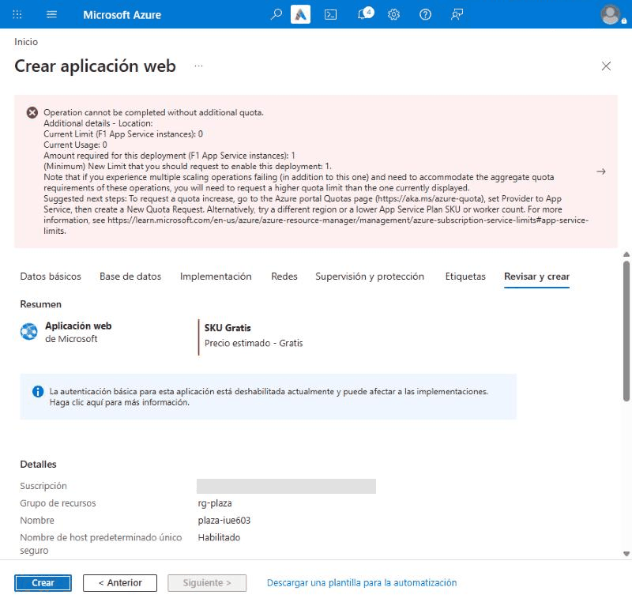
Error 2: región no permitida. El mensaje dice Resource was disallowed by Azure: this policy maintains a set of best available regions. Quiere decir que la región elegida no está en la lista que tu suscripción de estudiante permite.
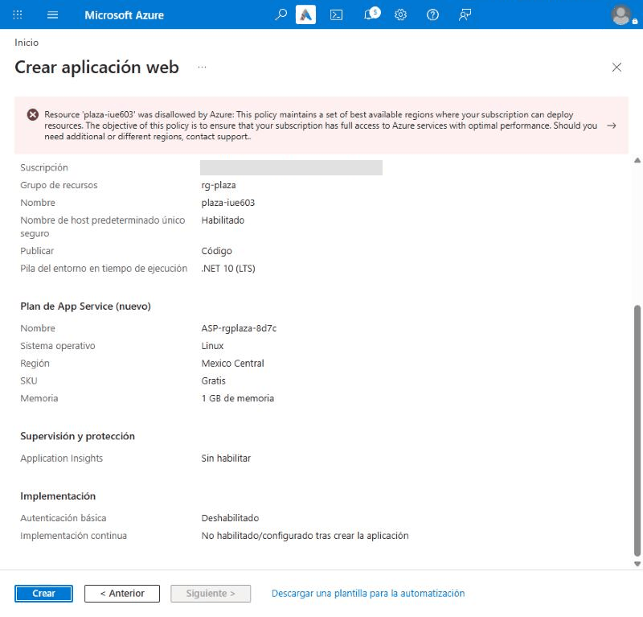
La solución es probar otra región. Pero no vale cualquiera: tu suscripción solo permite unas pocas, y esa lista la define una directiva de Azure. Puedes verla tú mismo:
- En el buscador superior escribe
Directivay entra al servicio. - En Tareas verás una asignación llamada Allowed resource deployment regions. Ábrela.
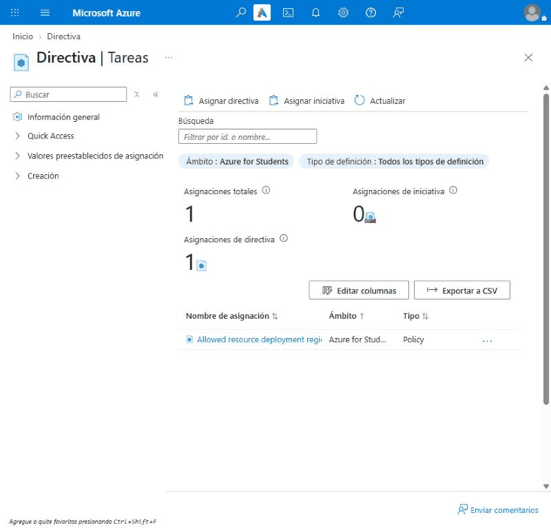
- En la pestaña Parámetros la fila Allowed locations muestra la lista de regiones permitidas.
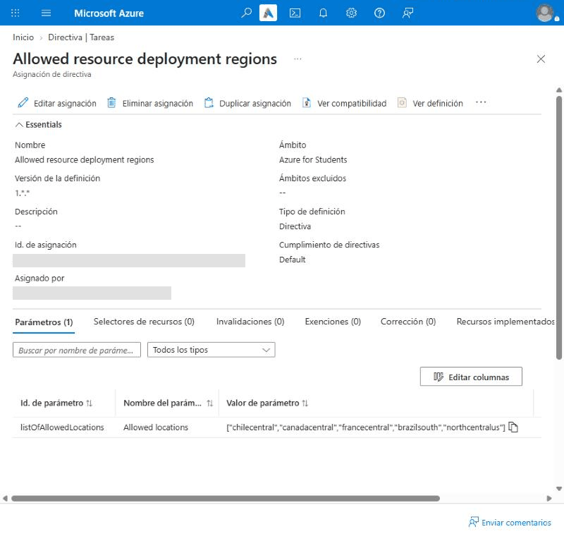
En esta suscripción son cinco: Chile Central, Canada Central, France Central, Brazil South y North Central US. La base de datos de la etapa 3 funcionó en Canada Central, pero ahí la cuota de F1 era 0. La aplicación web se creó con éxito en Brazil South.
Para probar otra región:
- Vuelve a la pestaña Datos básicos del formulario y cambia la Región por otra de la lista permitida. Al cambiar de región, el plan de precios vuelve a Básico B1.
- Elige otra vez Gratis F1, haz clic en Revisar y crear y luego en Crear.
- Si falla de nuevo, repite con la siguiente región de la lista.
Puedes crear la aplicación con el plan Básico B1, que cuesta alrededor de 13 a 15 USD al mes. Sale de tu crédito de estudiante. Si la usas solo durante la clase y luego borras el grupo rg-plaza, el gasto es una fracción pequeña de ese valor. También puedes pedir un aumento de cuota desde la página Cuotas del portal, pero la respuesta puede tardar.
En este ejemplo la base de datos está en Canada Central y la aplicación en Brazil South. Funciona, pero cada consulta viaja entre dos regiones, así que la aplicación responde un poco más lenta. Para una aplicación de clase no importa. En un proyecto real se ponen en la misma región.
Comprueba
- Cuando el despliegue termina, el portal muestra Se completó la implementación.
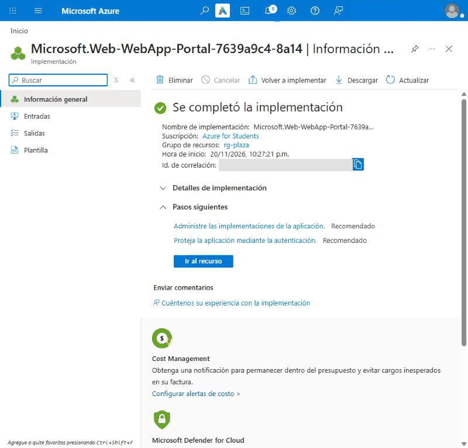
- Haz clic en Ir al recurso. En Essentials verifica que el Estado es En ejecución, que la Ubicación es la región donde se creó y que el Plan de App Service termina en (F1: 1). En Dominio predeterminado está la dirección pública de tu aplicación, con la forma
<nombre>-<código>.<región>-01.azurewebsites.net. Más abajo, en Propiedades, la Pila en tiempo de ejecución debe decir .NET - 10.0.
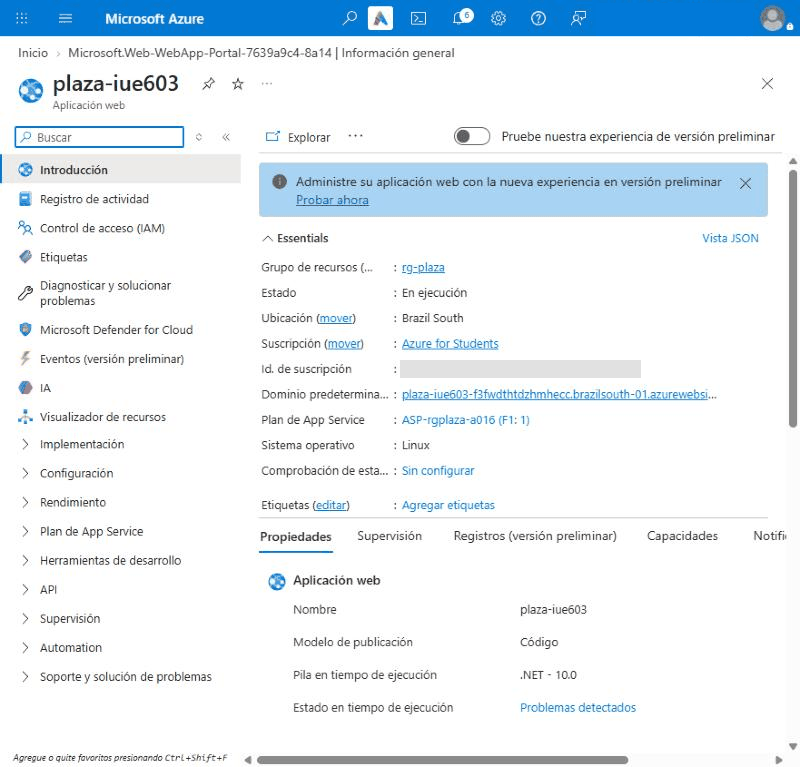
- Haz clic en el dominio predeterminado. Se abre una página de Azure que dice Your web app is running and waiting for your content. Eso significa que el servidor de la aplicación ya está vivo y esperando a que le publiques tu código.
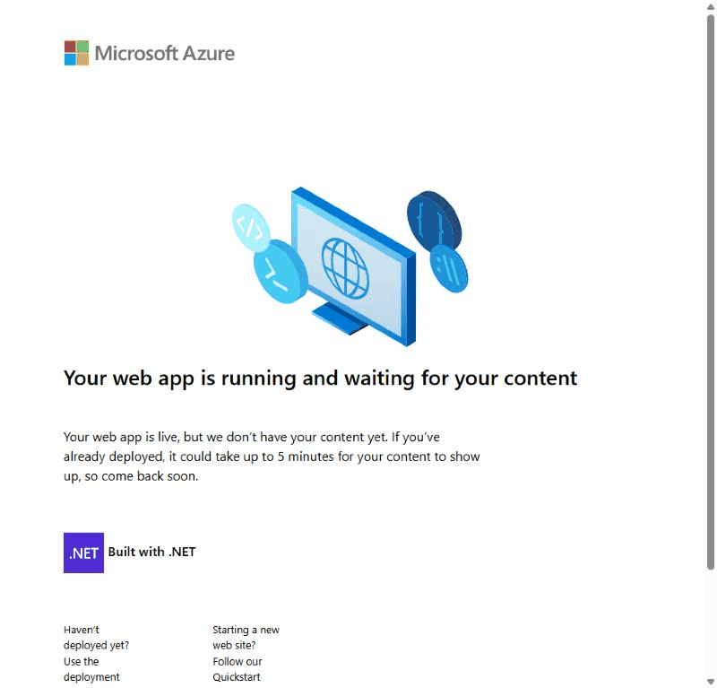
Si ves esa página, la etapa 4 está terminada. Plaza todavía no está ahí: lo que ves es el contenido de relleno que Azure pone mientras tanto.
Etapa 5. Preparar Plaza y subirla a GitHub
Qué vas a lograr
Plaza en un repositorio de GitHub, comprobada y limpia, lista para que Azure la tome desde ahí. En las etapas siguientes enlazarás la aplicación web de Azure con ese repositorio.
Por qué GitHub y no copiar la carpeta
Azure no recibe tu carpeta del equipo. Cuando enlazas la aplicación web con un repositorio, GitHub compila y publica el código cada vez que subes cambios a la rama main, mediante una herramienta llamada GitHub Actions. Por eso lo que está en GitHub es lo que se publica: si no está en el repositorio, no llega a Azure.
Qué cambia en el proyecto y qué no
Nada de código. Plaza no necesita ningún cambio para publicarse. Lo único que cambia es de dónde sale la cadena de conexión a la base de datos:
| En tu equipo | En Azure | |
|---|---|---|
Dónde está la cadena Plaza |
appsettings.Development.json, con el servidor localhost |
La variable de entorno Plaza de la aplicación web (etapa 6) |
| Quién la lee | GetConnectionString("Plaza") en Program.cs |
El mismo GetConnectionString("Plaza") |
El código es idéntico en los dos sitios. Por eso la contraseña de la base de datos nunca debe estar en el repositorio: en Azure vive en la configuración de la aplicación, fuera del código.
Comprueba que Plaza compila y publica en Release
GitHub Actions va a ejecutar lo mismo que ejecutas tú ahora: compilar en modo Release y generar la carpeta de publicación. Si falla aquí, fallaría allí.
- Abre PowerShell dentro de la carpeta
Plaza, la que contienePlaza.csproj. - Ejecuta el comando. Le pedimos que escriba la salida en una carpeta temporal, para no ensuciar el proyecto:
dotnet publish Plaza.csproj -c Release -o "$env:TEMP\plaza-publish"- Debe terminar sin errores y mostrar una línea como esta, con la ruta de la carpeta temporal:
Plaza -> C:\Users\...\Temp\plaza-publish\- En esa carpeta debe estar
Plaza.dll. Puedes borrarla después.
Revisa que el repositorio esté limpio
Tres comprobaciones antes de subir. Todas se ejecutan en la carpeta Plaza.
- Que no se hayan subido archivos de compilación. No debe imprimir nada:
git ls-files | Select-String -Pattern '(^|/)(bin|obj)/'- Que no haya contraseñas en el código. No debe imprimir nada:
git grep -niE 'password=|pwd='- Qué falta por subir. Debe decir nothing to commit, working tree clean:
git statusSi el primer comando imprime algo, bin/ u obj/ se subieron por error: el archivo .gitignore de la plantilla de .NET ya los excluye, así que revisa que no lo hayas borrado. Si el segundo imprime algo, quita esa contraseña del archivo antes de subirlo. Una contraseña que llegó a GitHub se considera comprometida aunque la borres después: queda en el historial.
Es un error frecuente copiar la cadena de conexión o el comando de migración a un archivo como recordatorio, por ejemplo como comentario al final de Program.cs. Un comentario también se sube. En el repositorio de esta práctica ocurrió: la cadena con la contraseña quedó escrita en un comentario y se subió a un repositorio público. Guarda esos datos en un bloc de notas fuera de la carpeta del proyecto y ejecuta siempre git grep antes de cada git push. Si ya te pasó, mira la sección Si algo sale mal.
Sube el proyecto
Si git status mostró cambios, súbelos. Cambia el mensaje por uno que describa lo que hiciste:
git add .
git commit -m "prepara Plaza para publicar en Azure"
git push origin mainSi todavía no tienes repositorio en GitHub:
- En github.com haz clic en New repository, dale un nombre (por ejemplo
iue-web-plaza) y créalo vacío, sin README ni.gitignore. - GitHub te muestra los comandos para un repositorio existente. En la carpeta
Plaza, ejecútalos:
git remote add origin https://github.com/<tu-usuario>/<tu-repositorio>.git
git branch -M main
git push -u origin mainComprueba
dotnet publishen Release terminó sin errores.- Los dos comandos de revisión no imprimieron nada.
git statusdice que el árbol de trabajo está limpio y que la rama está al día conorigin/main.- Al abrir tu repositorio en github.com, la rama es
mainy ves las carpetasControllers,Models,Views,Migrationsy el archivoPlaza.csproj.
Etapa 6. Conectar la aplicación con la base de datos
Qué vas a lograr
Que la aplicación web de Azure sepa dónde está la base de datos y con qué usuario entrar. Para eso le guardas una cadena de conexión en su configuración.
Qué es la cadena de conexión
Es una sola línea de texto con los datos para entrar a la base: en qué servidor está, cómo se llama la base, qué usuario usar y su contraseña. En tu equipo, Plaza la lee de appsettings.Development.json. En Azure no existe ese archivo con tus datos, y la contraseña no puede estar en el repositorio, así que la guardas en la configuración de la aplicación web, fuera del código.
La línea que vas a completar
Copia esta línea en un bloc de notas y cambia los dos textos entre < y >:
Host=<tu-servidor>.postgres.database.azure.com;Port=5432;Database=plaza_campesina;Username=plazaadmin;Password=<tu-contraseña>;SSL Mode=Require| Parte | Qué escribir |
|---|---|
Host= |
El punto de conexión de tu servidor, el que anotaste en la etapa 3. Reemplaza <tu-servidor> por el nombre de tu servidor, por ejemplo plaza-pg-iue603. |
Port=5432 |
No cambia: es el puerto estándar de PostgreSQL. |
Database= |
plaza_campesina, la base que creaste en la etapa 3. |
Username= |
plazaadmin, el usuario administrador de la etapa 3. |
Password= |
La contraseña que escribiste al crear el servidor. Reemplaza <tu-contraseña>, sin los signos < ni >. |
SSL Mode=Require |
No cambia: Azure rechaza las conexiones sin cifrar. |
Todo va en una sola línea, sin saltos y sin espacios después de los punto y coma. Si te equivocas en un dato, la aplicación no falla al guardar: falla después, al intentar conectarse.
Los pasos
- Abre tu aplicación web en el portal. En el menú de la izquierda abre la sección Configuración y haz clic en Variables de entorno.
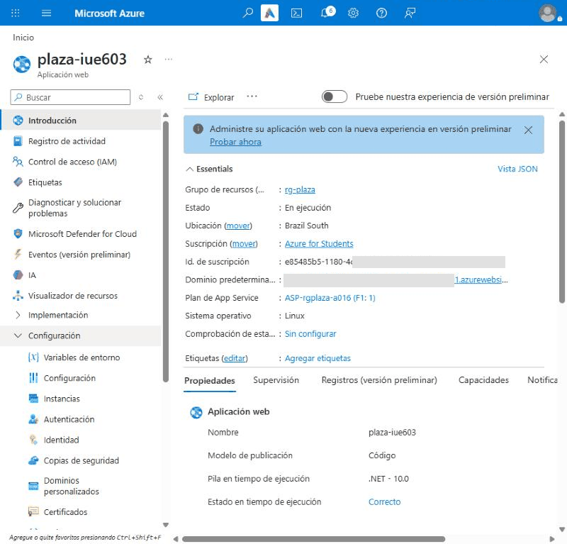
- Se abre la página con dos pestañas: Configuración de aplicación y Cadenas de conexión. Haz clic en Cadenas de conexión.
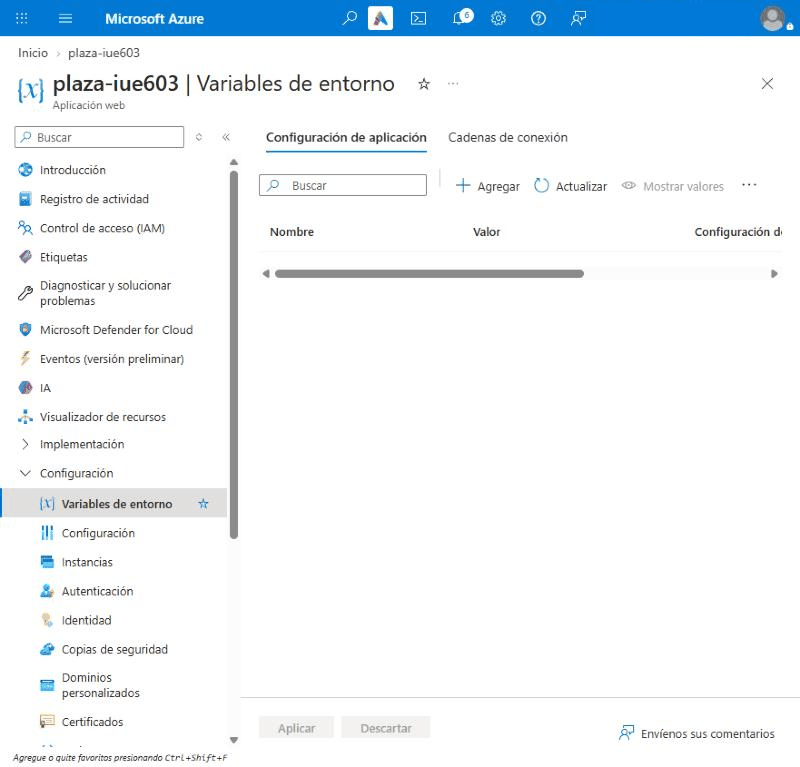
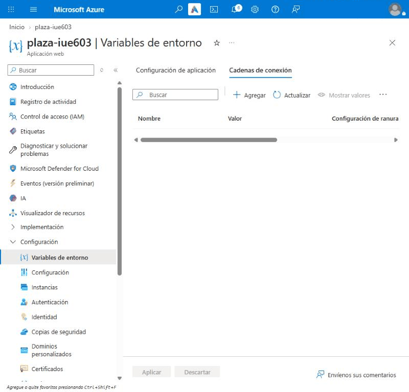
- Haz clic en Agregar. Se abre el panel Agregar o editar una cadena de conexión, con tres campos: Nombre, Valor y Tipo.
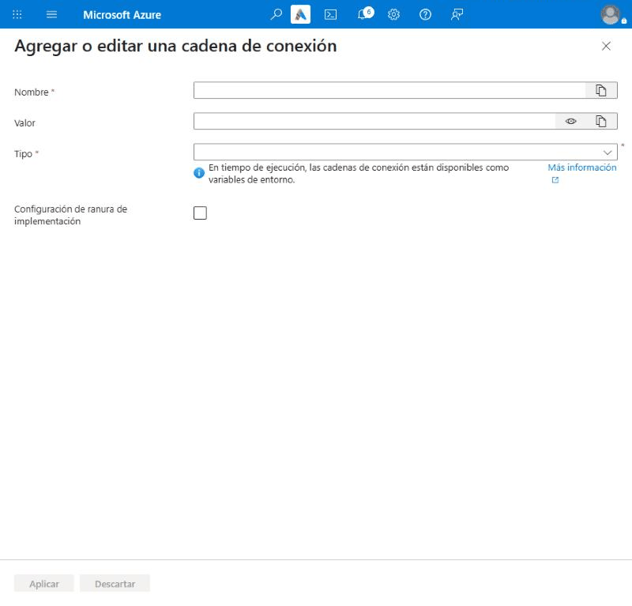
- En Nombre escribe exactamente
Plaza, con la P mayúscula. Es el nombre que Plaza busca enProgram.cs: si lo escribes distinto, la aplicación no encuentra la cadena. - En Tipo abre la lista y elige PostgreSQL. No elijas Custom ni SQLServer: el tipo hace que Azure le ponga a la variable un prefijo que .NET reconoce como cadena de conexión.
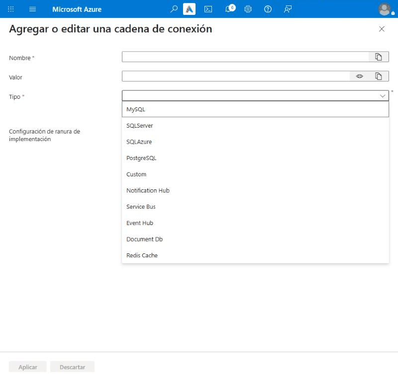
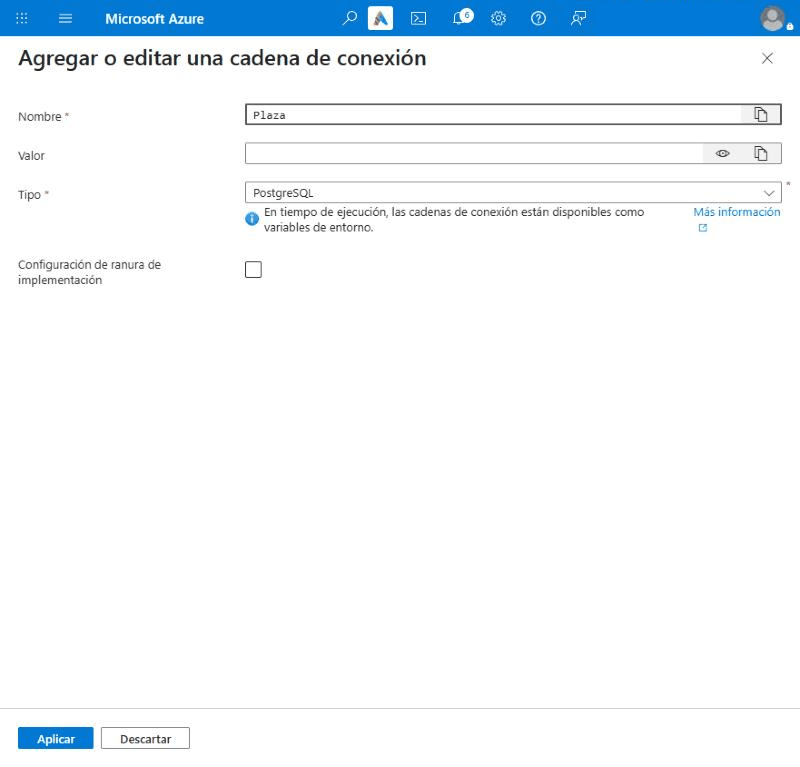
- En Valor pega la línea que completaste. Por seguridad el campo muestra puntos en vez de texto. Si quieres comprobar lo que escribiste, el icono del ojo lo muestra mientras lo tienes pulsado, pero hazlo sin nadie mirando tu pantalla.
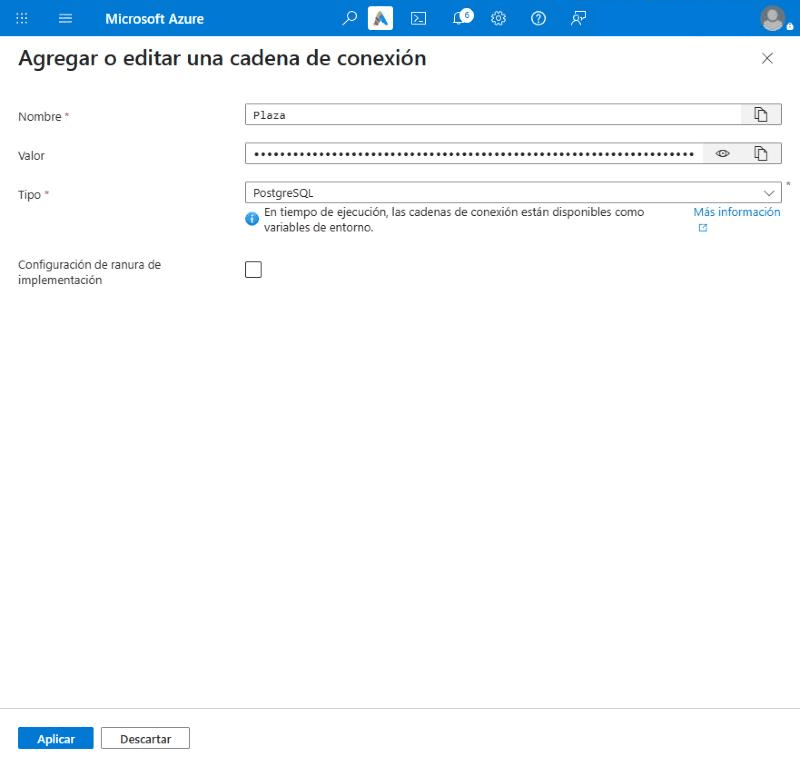
- Haz clic en Aplicar. El panel se cierra y la tabla muestra una fila con el nombre
Plazay el valor oculto.
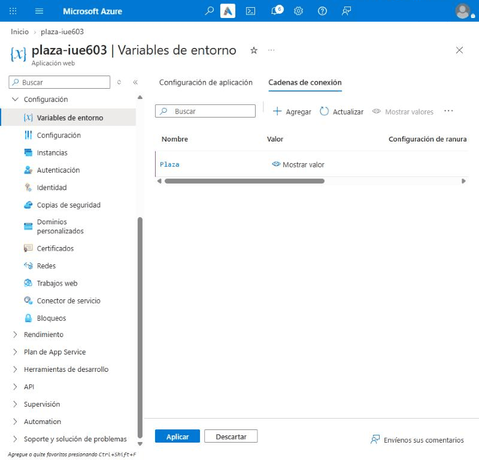
- Todavía no está guardada. Haz clic en el botón Aplicar de la parte inferior de la página. Azure avisa que la aplicación puede reiniciarse al actualizar las cadenas de conexión. Haz clic en Confirmar.
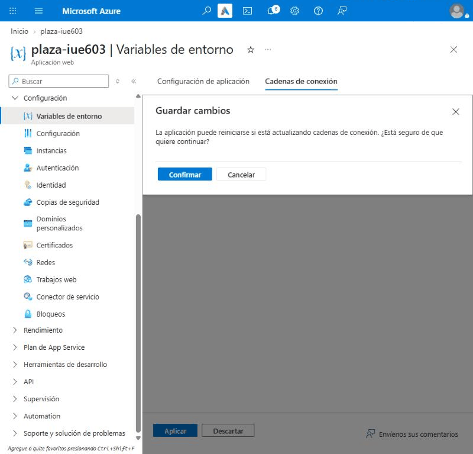
- Aparece una notificación verde: Se han actualizado correctamente las cadenas de conexión.
Hay dos: el del panel, que añade la fila a la lista, y el de la parte inferior de la página, que guarda los cambios en Azure. Si solo pulsas el primero, la cadena se pierde al salir de la página.
Cómo llega la cadena a tu código
Para el tipo PostgreSQL, Azure crea una variable de entorno llamada POSTGRESQLCONNSTR_Plaza. .NET reconoce ese prefijo y la entrega a tu código como si fuera ConnectionStrings:Plaza, de modo que la línea de Program.cs no cambia:
opciones.UseNpgsql(builder.Configuration.GetConnectionString("Plaza"))Comprueba
- En la pestaña Cadenas de conexión hay una fila llamada
Plaza. - La notificación de guardado salió en verde.
- Los datos de la línea coinciden con los de la etapa 3: mismo servidor, mismo usuario y la base
plaza_campesina.
Todavía no puedes ver Plaza funcionando: la base de datos está vacía y la aplicación todavía no tiene tu código. Eso se resuelve en las dos etapas siguientes.
Etapa 7. Crear las tablas en la base de datos
Qué vas a lograr
Que la base plaza_campesina de Azure tenga las tablas de Plaza. Hoy está vacía: solo existe la base, sin ninguna tabla.
Qué es una migración y por qué se aplica desde tu equipo
Una migración es un archivo del proyecto que describe cómo crear o cambiar las tablas. Plaza ya tiene una, llamada Inicial, en la carpeta Migrations: define la tabla Productos y cuatro productos de ejemplo. Entity Framework Core la ejecuta contra la base de datos que le indiques.
Azure no aplica las migraciones por su cuenta: Program.cs no las ejecuta al arrancar. Las aplicas tú, desde tu equipo, apuntando a la base de Azure. Eso es posible porque en la etapa 3 abriste el firewall del servidor para tu dirección IP.
El comando
Abre PowerShell dentro de la carpeta Plaza, la que contiene Plaza.csproj, y ejecuta este comando. Cambia <tu-servidor> y <tu-contraseña> por tus datos, igual que en la etapa 6:
dotnet ef database update --connection "Host=<tu-servidor>.postgres.database.azure.com;Port=5432;Database=plaza_campesina;Username=plazaadmin;Password=<tu-contraseña>;SSL Mode=Require"La opción --connection le dice a dotnet ef que use esa base en lugar de la de appsettings.Development.json, que apunta a localhost. Sin ella, las tablas se crearían en tu PostgreSQL local y la base de Azure seguiría vacía.
El comando lleva tu contraseña escrita, y PowerShell guarda lo que escribes. Para esta práctica, con una base que borrarás al terminar, es aceptable. En un proyecto real no se hace así: se usa una variable de entorno o un gestor de secretos, como verás en la semana de configuración de entornos.
Qué debes ver
El comando tarda unos segundos y escribe mucho texto. Estas son las líneas que importan, en el orden en que salen:
Build succeeded.
fail: Microsoft.EntityFrameworkCore.Database.Command[20102]
Failed executing DbCommand
SELECT "MigrationId", "ProductVersion" FROM "__EFMigrationsHistory" ...
info: Microsoft.EntityFrameworkCore.Database.Command[20101]
CREATE TABLE IF NOT EXISTS "__EFMigrationsHistory" ( ... );
info: Microsoft.EntityFrameworkCore.Migrations[20402]
Applying migration '20261107145524_Inicial'.
CREATE TABLE "Productos" ( ... );
INSERT INTO "Productos" ("Id", "Nombre", "Precio") VALUES (1, 'Tomate', 3500.0);
...
Done.fail: del principio es normal
Lo primero que hace EF Core es leer la tabla __EFMigrationsHistory, donde anota qué migraciones ya aplicó. En una base nueva esa tabla todavía no existe, así que la lectura falla y aparece una línea con fail:. Enseguida EF Core la crea (CREATE TABLE IF NOT EXISTS) y sigue. Lo que importa es el final: si termina con Done., todo salió bien.
El identificador de la migración (20261107145524_Inicial en este ejemplo) cambia en tu proyecto, porque lleva la fecha y la hora en que se creó.
Si falla
| Lo que ves | Qué significa | Qué hacer |
|---|---|---|
Host desconocido |
Tu equipo no pudo traducir el nombre del servidor a una dirección: suele ser una caché de DNS vieja, de cuando el servidor era nuevo. | Ejecuta ipconfig /flushdns y repite el comando. Revisa también que el nombre del servidor esté bien escrito. |
Un mensaje con pg_hba.conf o que la conexión se agota |
El firewall del servidor no deja entrar a tu IP. Tu IP pública cambia si cambias de red. | En el servidor, abre Redes y agrega tu IP actual, como en la etapa 3. |
password authentication failed |
El usuario o la contraseña no coinciden con los del servidor. | Revisa Username= y Password=. Si olvidaste la contraseña, el botón Restablecer contraseña del servidor te deja poner otra. |
database "plaza_campesina" does not exist |
La base de datos no existe en el servidor. | Créala como en la etapa 3. |
Comprueba
- El comando terminó con
Done.. - En la salida aparece
Applying migrationcon el nombre de tu migración y elCREATE TABLE "Productos". - Aparecen los cuatro
INSERT INTO "Productos": Tomate, Aguacate, Papa y Panela.
Ya tienes la base de datos lista con sus tablas y datos. Falta lo más importante: llevar el código de Plaza a la aplicación web, desde GitHub.
Etapa 8. Enlazar la aplicación con GitHub
Qué vas a lograr
Que cada vez que subas cambios a la rama main de tu repositorio, GitHub compile Plaza y la publique en la aplicación web de Azure, sin que tengas que hacer nada más. Eso se llama publicación continua (CI/CD).
Cómo funciona
Azure agrega al repositorio un archivo de flujo de trabajo (.github/workflows/main_<tu-aplicación>.yml) que le dice a GitHub Actions qué hacer en cada push: instalar .NET, compilar, publicar y desplegar en tu aplicación web. Para que GitHub pueda desplegar en tu nombre, necesita una forma de autenticarse en Azure. El Centro de implementación ofrece dos.
| Tipo de autenticación | Cómo funciona | Estado en esta guía |
|---|---|---|
| Identidad asignada por el usuario (OIDC) | Azure crea una identidad y GitHub la usa sin contraseñas. | Falla con repositorios nuevos (ver más abajo). |
| Autenticación básica | Azure guarda en GitHub un perfil de publicación como secreto del repositorio. | Funciona. Es la que usamos. |
Por qué no usamos la identidad asignada por el usuario
Es la opción que el portal propone por defecto y la más segura, pero con un repositorio recién creado falla al guardar con este mensaje: “No pudimos verificar cómo GitHub Actions emite tokens OIDC para este repositorio”.
La causa más probable es un cambio de GitHub: los repositorios creados después del 15 de julio de 2026 usan de forma obligatoria un formato nuevo de identidad para los tokens OIDC, que incluye los números internos del propietario y del repositorio. Los repositorios anteriores a esa fecha conservan el formato clásico. En esta práctica el portal falló con un repositorio nuevo; no está confirmado que el origen del fallo esté en Azure, pero lo cierto es que no se puede volver al formato clásico en un repositorio nuevo, así que esa ruta no sirve para la clase. Es posible que Azure lo corrija más adelante: si con tu repositorio funciona la identidad asignada por el usuario, también es válida.
Si pulsas Guardar con la identidad asignada y falla, Azure ya creó una identidad (con un nombre como oidc-msi-xxxx) y su permiso. Un segundo intento con la misma opción da otro error: “The role assignment already exists”. No lo reintentes: cambia a Autenticación básica como se explica abajo. La identidad sobrante se borra junto con el grupo de recursos en la etapa final.
Paso 1. Habilitar la autenticación básica de SCM
La autenticación básica viene deshabilitada en las aplicaciones nuevas. Si la eliges en el Centro de implementación sin habilitarla, el portal te lo avisa y no te deja guardar:
Para habilitarla:
- En tu aplicación web, abre Configuración y luego la pestaña Configuración general.
- Fíjate en Credenciales de publicación de autenticación básica de SCM: está sin marcar.
- Marca la casilla de SCM. La de FTP déjala sin marcar: no la necesitas.
- Haz clic en Aplicar al pie de la página y confirma. El portal avisa: La configuración general se actualizó correctamente.
Habilitar la autenticación básica permite publicar con un usuario y una contraseña de despliegue, que es menos seguro que una identidad sin contraseñas. Para una aplicación de clase que borrarás al terminar es una decisión razonable. En un proyecto real conviene usar la identidad asignada, cuando funcione con tu repositorio.
Paso 2. Abrir el Centro de implementación
- En el menú de tu aplicación web abre Implementación y luego Centro de implementación.
- Deja seleccionada Implementación continua (CI/CD). En Origen elige GitHub. La compilación es con Acciones de GitHub.
Paso 3. Autorizar a Azure en GitHub
- Haz clic en Autorizar. Se abre una ventana de GitHub.
- Inicia sesión con tu cuenta de GitHub y acepta el acceso que pide Azure. Esa pantalla pide permisos sobre tu cuenta: léela antes de aceptar.
- Al volver al portal, junto a Sesión iniciada como aparece tu nombre de usuario de GitHub.
Paso 4. Elegir organización, repositorio y rama
- Organización: tu cuenta personal de GitHub es la única opción, a menos que pertenezcas a organizaciones.
- Repositorio: la lista muestra todos tus repositorios. Escribe
plazaen el cuadro de búsqueda para filtrar y elige tu repositorio de Plaza.
- Rama: elige
main. Es la rama que el flujo de trabajo vigilará.
- Opción de flujo de trabajo: deja Agregar un flujo de trabajo. Azure creará el archivo
main_<tu-aplicación>.ymlen tu repositorio.
Paso 5. Elegir la autenticación y guardar
- Baja hasta Configuración de autenticación y elige Autenticación básica. Ya no debe aparecer el mensaje de error en rojo.
- Sube al inicio de la página y haz clic en Guardar.
- Espera unos segundos. Aparece una notificación verde: Se configuró correctamente la canalización de compilación e implementación de Acciones de GitHub.
Qué hizo Azure en tu repositorio
Al guardar, Azure hizo dos cosas en tu repositorio de GitHub y lanzó la primera publicación:
- Agregó un commit con el archivo
.github/workflows/main_<tu-aplicación>.yml. - Creó un secreto de Actions llamado
AZUREAPPSERVICE_PUBLISHPROFILE_<código>, con las credenciales de publicación. Es lo que permite a GitHub desplegar en tu aplicación.
Este es el contenido del archivo, con los comentarios iniciales quitados:
name: Build and deploy ASP.Net Core app to Azure Web App - plaza-iue603
on:
push:
branches:
- 'main'
workflow_dispatch:
jobs:
build:
runs-on: ubuntu-latest
permissions:
contents: read
steps:
- uses: actions/checkout@v4
- name: Set up .NET Core
uses: actions/setup-dotnet@v4
with:
dotnet-version: '10.x'
- name: Build with dotnet
run: dotnet build --configuration Release
- name: dotnet publish
run: dotnet publish -c Release -o ${{env.DOTNET_ROOT}}/myapp
- name: Upload artifact for deployment job
uses: actions/upload-artifact@v4
with:
name: .net-app
path: ${{env.DOTNET_ROOT}}/myapp
deploy:
runs-on: ubuntu-latest
needs: build
steps:
- name: Download artifact from build job
uses: actions/download-artifact@v4
with:
name: .net-app
- name: Deploy to Azure Web App
id: deploy-to-webapp
uses: azure/webapps-deploy@v3
with:
app-name: 'plaza-iue603'
slot-name: 'Production'
package: .
publish-profile: ${{ secrets.AZUREAPPSERVICE_PUBLISHPROFILE_<código> }}Se lee de arriba hacia abajo:
| Parte | Qué hace |
|---|---|
on: push: branches: main |
Se ejecuta cada vez que subes cambios a main. |
workflow_dispatch |
Permite ejecutarlo a mano desde la pestaña Actions de GitHub. |
build |
Descarga tu código, instala .NET 10, ejecuta dotnet build y dotnet publish en Release, y guarda el resultado. Es lo mismo que comprobaste en la etapa 5. |
deploy |
Toma lo que dejó build y lo envía a tu aplicación web con el perfil de publicación guardado como secreto. |
Comprueba
- Apareció la notificación verde de la canalización.
- En GitHub, tu repositorio tiene la carpeta
.github/workflowscon el archivo del flujo de trabajo. - En GitHub, en Settings, Secrets and variables, Actions, existe el secreto
AZUREAPPSERVICE_PUBLISHPROFILE_....
Etapa 9. Comprobar que Plaza está publicada
Qué vas a lograr
Ver Plaza funcionando en una dirección pública de internet, con los datos que salen de la base de Azure.
La primera publicación
Al guardar la etapa anterior, el commit de Azure disparó el flujo de trabajo. Para verlo, abre tu repositorio en GitHub y entra a la pestaña Actions. Aparece una ejecución llamada Add or update the Azure App Service build and deployment workflow config. Un check verde indica que terminó bien.
Si haces clic en la ejecución, verás los dos trabajos, build y deploy, cada uno con sus pasos en verde. Pueden aparecer avisos amarillos que dicen Node.js 20 is deprecated: son advertencias de GitHub sobre las versiones de las acciones y no impiden la publicación.
Abre Plaza
- En el portal, abre tu aplicación web y copia el Dominio predeterminado, la dirección que termina en
azurewebsites.net. - Ábrela en el navegador agregando al final
/catalogo, porque esa es la ruta de Plaza que muestra los productos:
https://<tu-dominio>.azurewebsites.net/catalogo- Debe aparecer la lista de productos con sus precios. Esos datos vienen de la base de datos de Azure: son los que creó la migración de la etapa 7.
- Si abres solo la dirección, sin
/catalogo, ves un error 404. Plaza no define una página en la raíz: las rutas de tu proyecto son las que declaraste en los controladores. No es un problema de Azure. - La primera petición después de un rato tarda más. El plan gratuito F1 duerme la aplicación cuando nadie la usa, y la primera visita la vuelve a despertar. Las siguientes responden rápido.
Haz un cambio y míralo publicarse
Esta es la parte que da sentido a la publicación continua. Vas a cambiar algo en Plaza y verlo aparecer en internet sin tocar el portal.
Azure agregó un commit a tu repositorio (el archivo del flujo de trabajo), pero tu carpeta local no lo tiene. Si intentas subir un cambio sin traerlo, Git rechaza el push con un mensaje como rejected o fetch first. Antes de cualquier cambio, ejecuta en la carpeta Plaza:
git pull origin main- Abre
Views/Catalogo/Listar.cshtmly cambia el título<h1>Catálogo</h1>por otro texto, por ejemplo<h1>Catálogo de la plaza</h1>. - Sube el cambio:
git add .
git commit -m "cambia el titulo del catalogo"
git push origin main- En GitHub, abre la pestaña Actions: aparece una ejecución nueva. Cuando termine en verde, recarga
/catalogoen el navegador: el título cambió.
El cambio puede ser tan grande como quieras. Esta captura es Plaza después de subir una plantilla completa con estilos, el mismo mecanismo: un git push y, cuando termina la ejecución, el sitio público ya es otro.
Comprueba
- La pestaña Actions muestra la ejecución con un check verde.
/catalogomuestra los productos de la base de datos.- Un cambio subido a
mainse refleja en la dirección pública después de que termina la ejecución.
Etapa 10. Borrar los recursos al terminar
Qué vas a lograr
Eliminar todo lo que creaste en Azure para que no siga consumiendo tu crédito de estudiante y para cerrar el acceso a la base de datos.
Por qué hay que hacerlo
Los recursos de Azure siguen existiendo y cobrando (o gastando horas gratuitas) mientras no los borres, aunque nadie los use. Como todo está dentro del grupo rg-plaza, borrar ese grupo elimina todo de una vez: no tienes que ir recurso por recurso.
Al borrar el grupo desaparecen la aplicación web, la base de datos con sus datos y la dirección pública. Borra los recursos solo después de que tu docente haya revisado tu publicación.
Los pasos
- En el portal abre Grupos de recursos y entra a
rg-plaza. La pestaña Recursos muestra lo que contiene. Deben ser cuatro: el plan de App Service, la identidadoidc-msi-...(la que quedó del intento fallido de la etapa 8), la aplicación web y el servidor PostgreSQL.
- Haz clic en los tres puntos (…) de la barra de arriba y elige Eliminar grupo de recursos.
- Se abre un panel que dice que el grupo y todos sus recursos dependientes se eliminarán permanentemente, con la lista de los cuatro recursos. Para confirmar, escribe el nombre del grupo (
rg-plaza) en el campo de abajo y haz clic en Eliminar.
- El portal muestra una notificación mientras elimina. Cuando termina,
rg-plazaya no aparece en la lista de grupos de recursos.
Lo que queda en GitHub
Borrar el grupo de Azure no toca tu repositorio. Siguen ahí el archivo .github/workflows/main_<tu-aplicación>.yml y el secreto del perfil de publicación. Desde ese momento, cada git push a main ejecutará el flujo de trabajo y fallará en el paso deploy, porque la aplicación de destino ya no existe. Para evitarlo tienes dos opciones:
- Borrar el archivo
.github/workflows/main_<tu-aplicación>.ymlde tu repositorio y subir el cambio. - O, en GitHub, desactivar el flujo de trabajo desde la pestaña Actions.
Si quieres además eliminar el secreto, está en Settings, Secrets and variables, Actions de tu repositorio.
Comprueba
rg-plazaya no aparece en Grupos de recursos.- La dirección pública de la aplicación ya no responde.
- Decidiste qué hacer con el flujo de trabajo en tu repositorio.
Apéndice. Cambiar la contraseña del servidor
Necesitas este procedimiento si la contraseña se subió a GitHub por error, si la compartiste sin querer o si la olvidaste. El orden importa: si solo cambias la contraseña en el servidor, Plaza deja de mostrar datos, porque la aplicación web sigue usando la antigua.
Paso 1. Restablecerla en el servidor
- Abre el servidor PostgreSQL en el portal. En la barra de la página Información general haz clic en Restablecer contraseña.
- Escribe la contraseña nueva en los dos campos. Debe cumplir los mismos requisitos de la etapa 3: entre 8 y 128 caracteres y tres de las cuatro categorías.
- Haz clic en Guardar.
Paso 2. Actualizar la cadena de la aplicación web
- En la aplicación web abre Configuración, Variables de entorno y la pestaña Cadenas de conexión.
- Haz clic en la fila
Plazapara editarla y reemplaza el valor por la línea de la etapa 6 con la contraseña nueva. - Haz clic en Aplicar del panel, luego en Aplicar de la parte inferior de la página y Confirmar.
Paso 3. Comprobar
Abre /catalogo en la dirección pública. Si muestra los productos, la aplicación se conecta con la contraseña nueva. Si aparece un error, revisa que la cadena no tenga espacios ni la contraseña vieja.
Paso 4. Quitar la contraseña vieja del repositorio
Borra del código cualquier línea que contenga la contraseña, ejecuta git grep -niE 'password=|pwd=' (no debe imprimir nada) y sube el cambio. Que no quede en el código no la hace secreta otra vez: la versión anterior sigue en el historial de Git. Por eso el primer paso, cambiar la contraseña, es el que cuenta.
Si algo sale mal
Estos son los problemas que aparecieron al preparar esta guía, con la causa y la solución de cada uno. Si algo te falla, busca aquí primero.
| Dónde | Lo que ves | Causa | Solución |
|---|---|---|---|
| Etapa 3, servidor | El formulario propone Producción con 4 núcleos y, al cambiarlo, B2s | Los valores por defecto no son los gratuitos | Elige Desarrollo/pruebas, luego Configurar servidor y el tamaño B1ms |
| Etapa 3, contraseña | Errores rojos en los campos de contraseña | Campo vacío o contraseña que no cumple: 8 a 128 caracteres, tres de cuatro categorías | Escribe la contraseña en los dos campos y revisa los requisitos |
| Etapa 4, plan | El formulario propone Básico B1 | Plan de pago por defecto | Elige Gratis F1 después de elegir la región: al cambiar de región el plan vuelve a B1 |
| Etapa 4, creación | Operation cannot be completed without additional quota, límite F1 igual a 0 | Tu suscripción no tiene cuota gratuita en esa región | Cambia a otra región de la lista permitida (etapa 4) |
| Etapa 4, creación | Resource was disallowed by Azure, política de regiones | La región no está entre las permitidas para tu suscripción | Consulta la directiva Allowed resource deployment regions y elige una de esas |
| Etapa 6, cadena | La cadena desaparece al salir de la página | Solo pulsaste Aplicar del panel, no el de la página | Pulsa también el Aplicar del pie de la página y confirma |
| Etapa 7, migración | Host desconocido |
Caché de DNS vieja en tu equipo | ipconfig /flushdns y repite el comando |
| Etapa 7, migración | Una línea con fail: al principio, pero termina en Done. |
EF Core lee una tabla que aún no existe en una base nueva | Nada: es normal |
| Etapa 7, migración | pg_hba.conf o conexión que se agota |
Tu IP no está en el firewall del servidor | Agrega tu IP actual en Redes del servidor |
| Etapa 8, guardar | No pudimos verificar cómo GitHub Actions emite tokens OIDC | Repositorio nuevo con el formato inmutable de identidad | Usa Autenticación básica (paso 1 a 5) |
| Etapa 8, guardar | The role assignment already exists | Un intento anterior con identidad asignada dejó restos | No reintentes con identidad: cambia a autenticación básica |
| Etapa 8, autenticación | La autenticación básica de SCM está deshabilitada | Viene deshabilitada en las aplicaciones nuevas | Habilítala en Configuración general (paso 1) |
| Etapa 9, navegador | La dirección no abre o dice que el servidor no se encuentra | Caché de DNS en tu equipo, porque el nombre es nuevo | ipconfig /flushdns y recarga |
| Etapa 9, Plaza | Error 404 en la dirección sin /catalogo |
Plaza no tiene página en la raíz | Abre /catalogo |
| Etapa 9, Plaza | La primera visita tarda | El plan F1 duerme la aplicación | Espera: las siguientes responden rápido |
| Etapa 9, cambio | git push rechazado, fetch first |
Azure agregó un commit que tu copia local no tiene | git pull origin main y vuelve a subir |
| Apéndice, contraseña | Después de cambiar la contraseña del servidor, /catalogo responde con error 500 y la página queda en blanco |
La aplicación web sigue usando la contraseña vieja en su cadena Plaza |
Actualiza la cadena Plaza con la contraseña nueva (apéndice, paso 2) y vuelve a abrir /catalogo |
| Etapa 10, GitHub | Después de borrar los recursos, las ejecuciones de Actions fallan en deploy | La aplicación de destino ya no existe | Borra el archivo del flujo de trabajo del repositorio o desactívalo desde la pestaña Actions |
| Etapa 9, Actions | Avisos amarillos de Node.js 20 is deprecated | GitHub avisa de versiones de acciones | Ignóralos: no bloquean la publicación |
| Etapa 5 o 9, GitHub | Subiste la cadena de conexión o la contraseña a tu repositorio, por ejemplo en un comentario | git grep no se ejecutó antes del git push, o el dato se copió a un archivo del proyecto |
Considera la contraseña comprometida. Cámbiala de inmediato siguiendo el apéndice Cambiar la contraseña del servidor: restablécela en el servidor, actualiza la cadena Plaza de la aplicación web y borra el texto del archivo. Borrarlo no basta: queda en el historial de Git de un repositorio público |
Lee el mensaje completo antes de buscar. En el portal, la campana de Notificaciones guarda los errores con su texto. En GitHub, la pestaña Actions muestra en qué paso exacto falló una publicación, y al hacer clic en el paso ves el detalle.